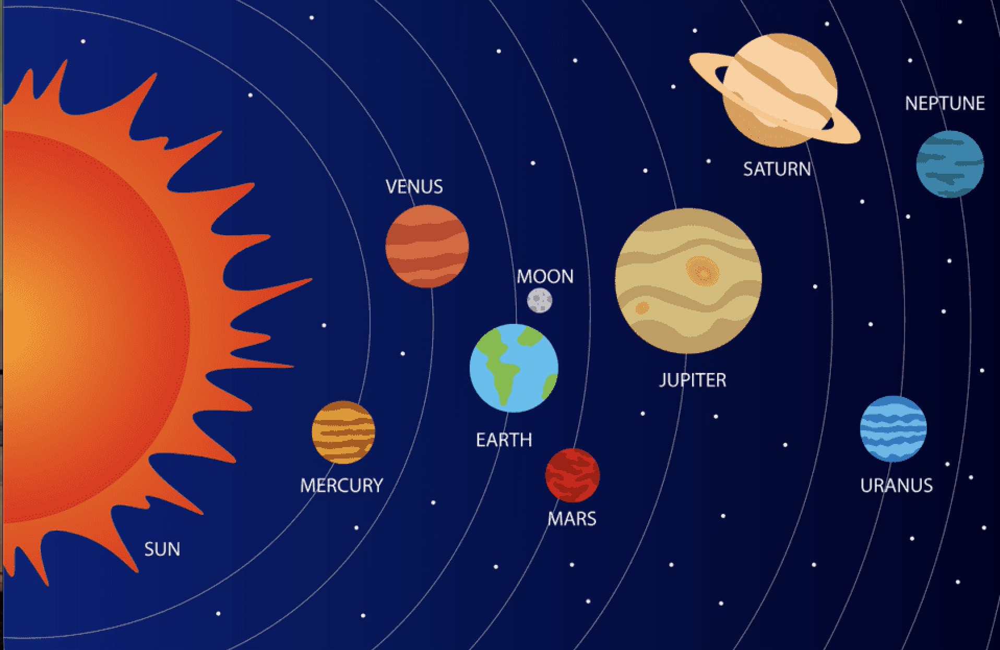
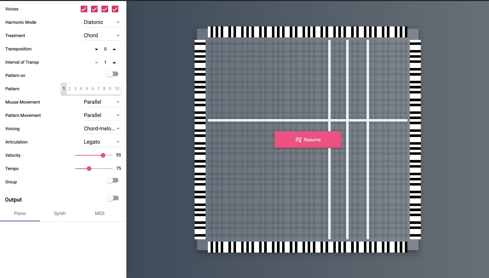
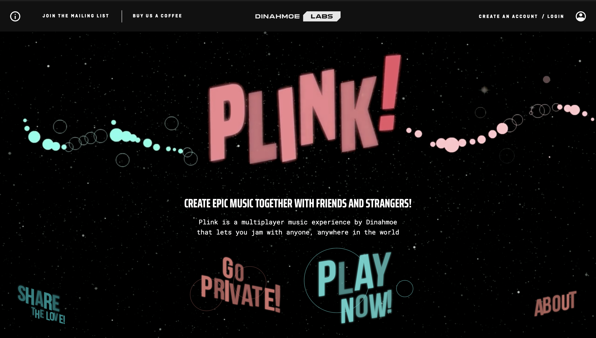
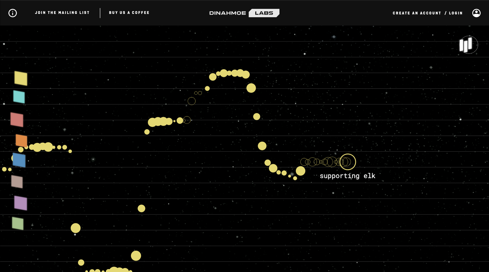
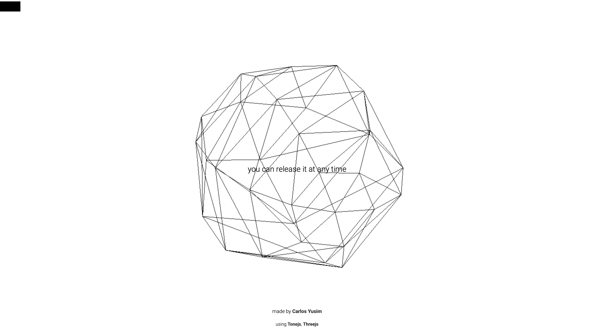
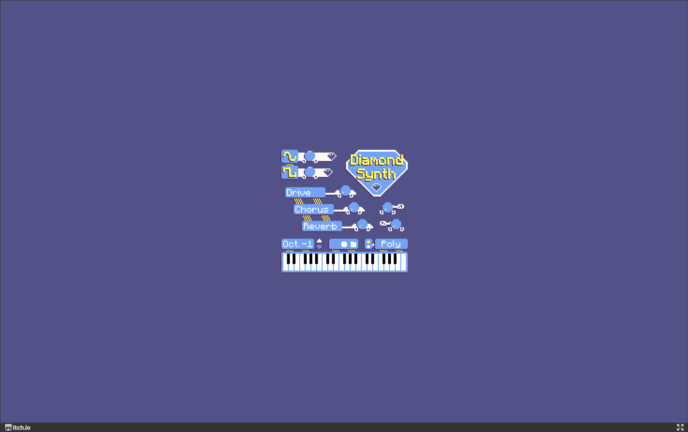

Design Scenario Analysis and Response
The Musical Toy for Toddlers scenario asks how young children with minimal language skills
can be given access to musical exploration. The scenario's context highlights a real barrier
in existing browser-based instruments: their depth of control, while valuable for experienced
users, often depends on reading labels, understanding menus, or precise input - none of
which a toddler can reliably do. I interpret this as a design problem about removing friction
between curiosity and sound, so that exploration requires no instruction and no language at all.
For my project, I respond to this through a "musical galaxy" concept called the "Milky Way",
where planets in a simple visual space each represent a different note or sound. Rather than
requiring the child to learn an interface, the instrument invites them to simply move around
the space and discover what happens - an interaction built on curiosity and play rather
than instruction.
The purpose of the instrument is to let a child with no reading ability and minimal language
explore musical sound freely, through movement alone, without needing to be taught how it
works. The worth of the design centres on accessibility and non-intimidation: removing the
sense of "getting it wrong" that complex instruments can create, and instead rewarding any
interaction - however random or exploratory - with an immediate, pleasant, and
forgiving sonic response.
Project Overview
Synopsis
The instrument is a browser-based "musical galaxy" - a visual space containing a small
number of planets, each mapped to a different note within a constrained, forgiving scale. As
the user moves their mouse across the screen, proximity to each planet is tracked and used to
trigger and shape sound, so that simply exploring the space with the cursor becomes an act of
musical play. No instructions, labels, or reading are required to begin interacting.

Response to Purpose and Worth
The instrument responds to the scenario's purpose - musical exploration without
reliance on language - by using spatial movement as the sole means of interaction. A
toddler does not need to identify buttons, read labels, or understand any interface
convention; they only need to move a cursor (or, on a touch device, a finger) and observe
what happens. This directly supports the worth of accessibility and non-intimidation, since
there is no fixed sequence of steps to learn and no way to "fail" at using it. Every movement
produces some sonic result, and the constrained scale ensures that whatever combination of
planets a child triggers will sound musically coherent rather than jarring, reinforcing
curiosity-driven play rather than performance pressure.
Project Framing
This project is built for the web browser, as required by the brief, using the Web Audio API
to make and control sound. The main technique used is spatial input - tracking the
mouse using the mousemove event. As the user moves the mouse closer to or
further from a planet, that movement decides whether a sound plays and how it sounds.
A few ideas from the UIs I looked at shaped how this instrument will work:
-
Like Music Mouse, the notes will be limited to a set of notes that
always sound good together, no matter where the user moves. This means there's no way to
make a "wrong" sound, which makes it safe and fun to explore.
-
Like Plink, sound will react continuously as the mouse moves, not just
when clicked. This makes the instrument feel more responsive and alive, which suits how a
toddler moves - freely and without aiming precisely.
-
Like Holdspace, the instrument will stick to one simple way of
interacting - moving the mouse - instead of adding lots of buttons or
settings. Keeping it simple keeps it calming and easy to understand.
-
Unlike Diamond Synth, there will be no labels, words, or settings that
need to be understood before using it. Everything should make sense just by trying it.
In terms of style, the sounds will be soft, warm, and gentle rather than harsh or
percussive, to suit a young audience and keep the toy feeling non-threatening. The visuals
will be simple too - basic shapes, colours, and glowing effects for the planets, rather
than detailed pictures, so the feedback stays clear and easy to notice.
What's not included: no menus, sliders, typed input, or written
instructions; no complex sequencing or step-based composing tools; and no sample-based or
harsh percussive sounds. These would all work against the goal of a toy that anyone can use
without being taught how. Touch input might be added later as an extra way to play, but the
mouse will be the main way to interact for now.
Design Analysis
Music Mouse - Laurie Spiegel, browser version by Tero Parviainen
(independently researched) - Purpose
Music Mouse turns mouse movement into music. Wherever you move the cursor on the grid,
the software automatically keeps the notes sounding good together - it already
"knows" which notes fit, so the user doesn't have to. That's why it's called an
"intelligent instrument": it carries the musical knowledge so the player doesn't need
any. A free version of it that runs in the browser was made by Tero Parviainen, with
Laurie Spiegel's own involvement, which is why it was usable for this analysis.
Impact on proposal: This supports the main idea behind the galaxy
instrument - if every planet is tied to notes that always sound good together,
then no matter where the user moves, nothing will ever sound "wrong." Music Mouse shows
that this kind of limit doesn't make an instrument boring - it actually makes it
easier and more fun for a beginner, because there's nothing to be afraid of getting
wrong.

Plink (independently researched) - Feedback
Plink is a music tool in the browser where you hold down the mouse button to play a
note, and moving your mouse up and down changes the pitch while you hold it. You can
also click coloured boxes to change instruments, and other people using the site at the
same time show up and play alongside you. The key thing is that the sound reacts
instantly and smoothly to movement - it doesn't just jump from note to note, it
slides, following your hand.
Impact on proposal: This shaped a key decision for the galaxy -
sound should react continuously as the mouse gets closer to a planet, not just switch on
and off with a click. Smooth, constant feedback feels more alive and playful, which
suits how a toddler moves - messy and exploratory, not precise.


Holdspace - Carlos Yusim (provided list)
- Worth / Characterisation
Holdspace only asks the user to do one thing: hold down the spacebar and let go. The
whole piece of music is built around that single action. Visually, it's simple too
- just black-and-white line art with generated sound. Because it only asks for one
interaction, it feels calm and focused rather than busy or confusing.
Impact on proposal: This is a reminder to keep the galaxy simple. It
would be easy to want to add more buttons or modes to make it feel "more advanced," but
Holdspace shows that sticking to one clear action - in this case, moving the mouse
- can be more effective, especially for a young user who needs things to feel
obvious.

Diamond Synth - Damiano Tagliaferri (provided list)
- Information Design
Diamond Synth is a more complex synthesizer. It has a keyboard you play like a piano,
plus knobs, waveform icons, and labelled buttons like Drive, Chorus, and Reverb, as well
as a switch between "Poly" and "Mono" modes. Some parts are easy to figure out just by
trying them (the waveform icons), but other parts only make sense if you already know
what words like "chorus" or "poly" mean - there's no way to guess what they do just
by looking.
Impact on proposal: This is useful as an example of what not to do.
Diamond Synth assumes the user can read letters and understands music production terms
- a toddler can do neither. It confirms that the galaxy instrument needs to avoid
any labels, text, or settings that require prior knowledge. Everything should be
understandable just by trying it - moving the mouse and hearing what happens.

Refrences: